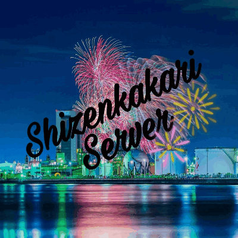
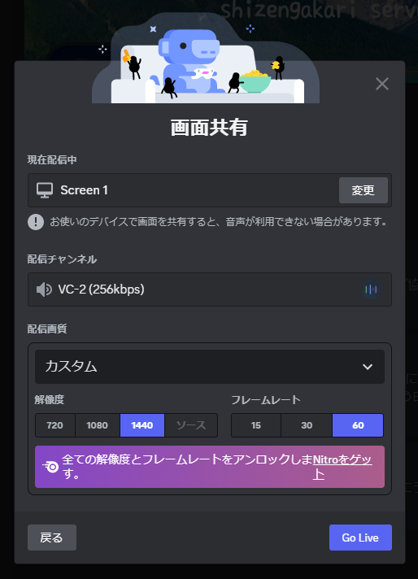
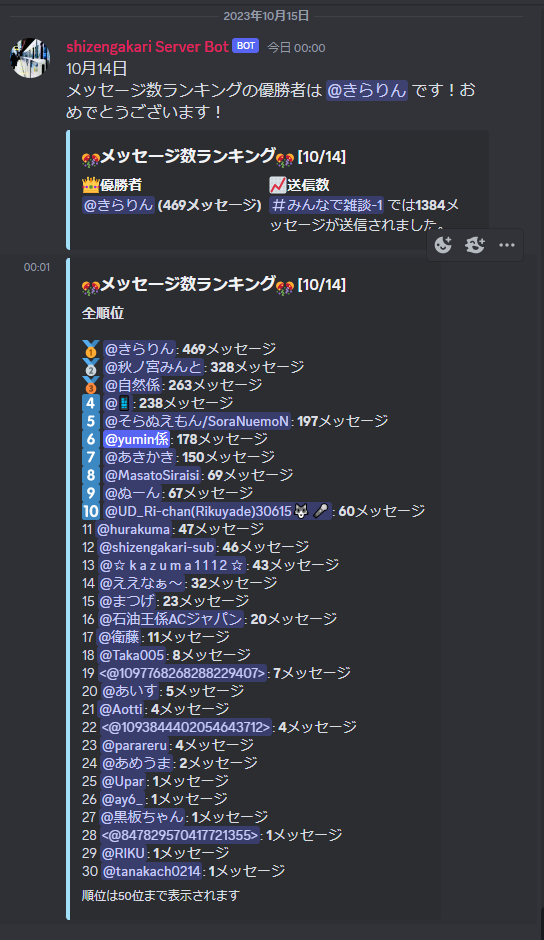
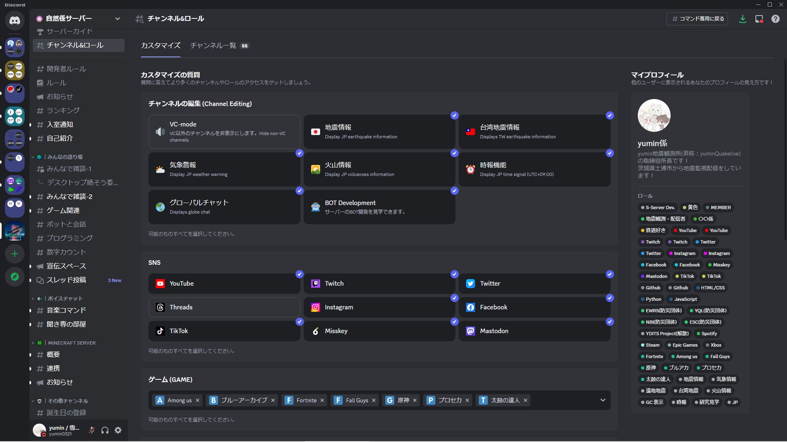
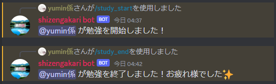
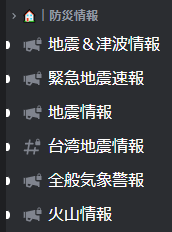

自然係サーバーの特徴
高画質・高フレームレートな画面共有
ブーストレベルが高いため、Nitroを持っていなくても高画質・高フレームレート配信が可能です。

メッセージランキング
毎日0時にサーバー独自のBotからメッセージ数ランキングが発表されます。

カスタマイズできるロール
自分に付与したいロールを選択してプロフィールをカスタマイズできます。

勉強モード
/study_start・/study_endコマンドを使用することで勉強に関係のないチャンネルを非表示し、勉強に集中できます。

防災情報の提供
防災情報の提供に特化したBotにより「地震情報・緊急地震速報・気象情報・津波情報」などの様々な情報を得ることが出来ます。

提供サービス
MinecraftServer・防災情報・S-Seever Devlopers
共有：